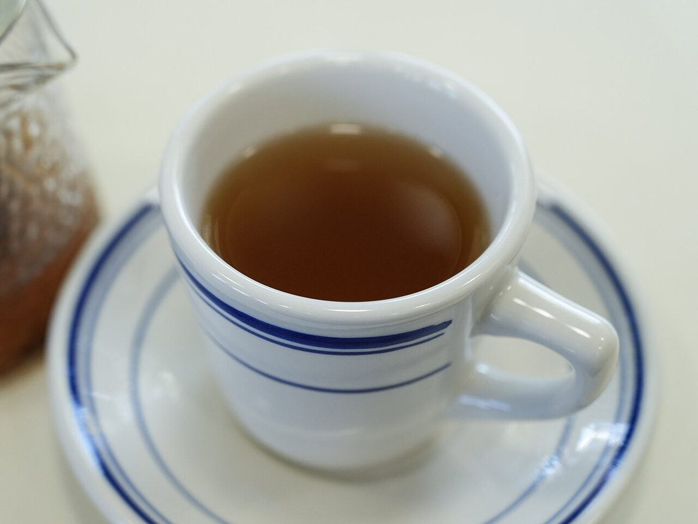
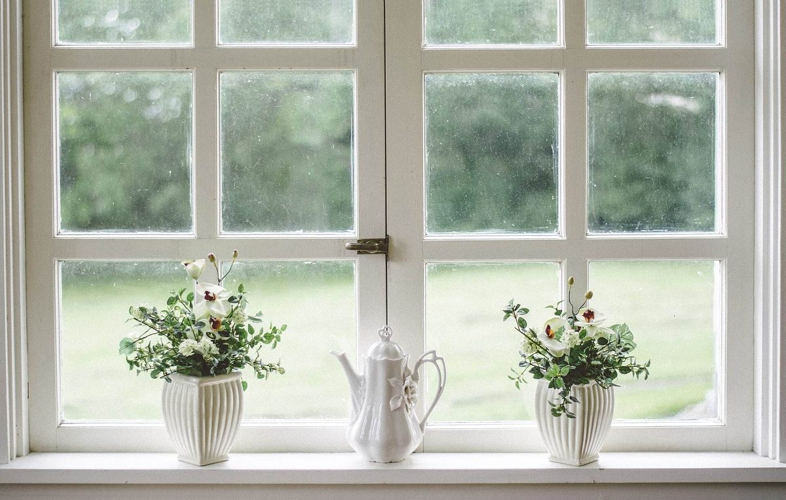
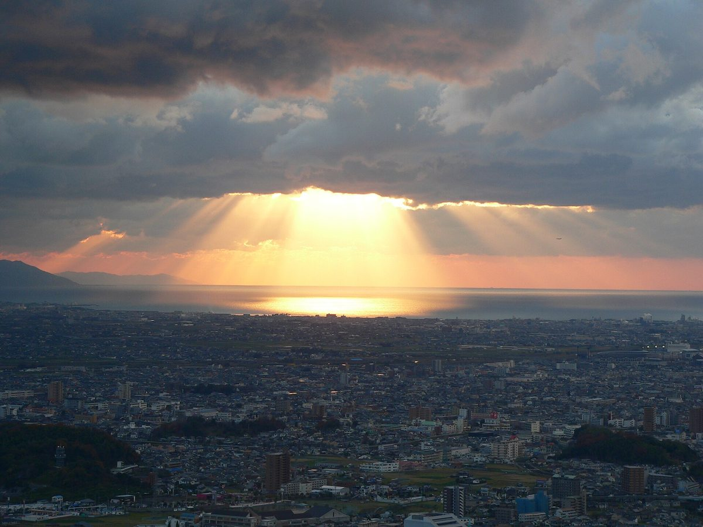

宇和島市津島町
ひと息つく、ちいさな時間を。
愛媛県宇和島市津島町にある「倉庫カフェ とんとん」の、制作見本ページです。お店の詳しい情報は、いま準備しているところです。


※掲載している写真はフリー素材のイメージ写真で、店舗の実際の様子ではありません。他地域で撮影されたものや、撮影地が不明なものを含みます。
このページの使い方
- 01
メニュー
メニューの内容は準備中です。決まり次第ご案内する予定です。
- 02
口コミ
いただいた声を載せるページです。いまは「イメージ例」の文章を置いています。
- 03
お店について
店名やお店の紹介は、お店の方に確認してから整えます。
- 04
アクセス
所在地と地図、電話番号をご案内しています。

津島町へ、ちょっと足を伸ばして
お出かけの途中でも、近くに用事があった日でも。「ちょっと寄ってみようかな」と思ったときは、まずお電話でお問い合わせください。